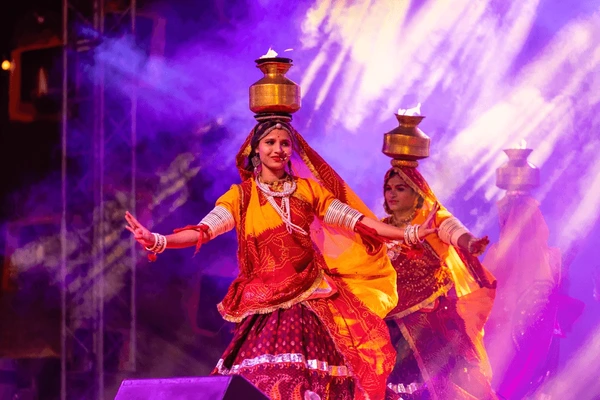

Global Culture Traveler
Global Culture Traveler
Global Culture Traveler
Global Culture Traveler
Published: March 18, 2025
Tribal art is a powerful reflection of indigenous communities’ beliefs, traditions, and connections with nature. Spanning continents and generations, this art form is both spiritual and practical, often used in rituals, storytelling, and everyday life.
In India, tribal art thrives in the form of Warli paintings from Maharashtra, with simplistic white figures on mud walls, and Gond art from Madhya Pradesh, known for vibrant colors and intricate patterns. These styles depict animals, trees, and mythological stories with symbolism rooted in their daily lives.
Deep within the Amazon, tribal art takes shape through body painting, pottery, and feather work. The use of natural dyes and geometric patterns reflects their environment and spiritual beliefs. Art is used to connect with ancestors, mark rites of passage, and decorate sacred spaces.
African tribal art is rich with symbolism and variety—wooden masks from Nigeria, beadwork from the Maasai in Kenya, and bronze sculptures from Benin all showcase a deep cultural identity. Art here is often tied to rituals, community leadership, and ancestral worship.
Across these regions, tribal art is community-driven, passed down through generations, and closely tied to nature. Materials like clay, bark, feathers, and natural pigments reflect sustainability and deep ecological awareness.
While many tribal communities fight to preserve their heritage in a modernizing world, tribal art is gaining appreciation globally through museums, galleries, and festivals. Supporting local artisans helps keep these traditions alive while giving voice to indigenous identities.
Tribal art is not just decoration—it’s a living archive of ancient wisdom and cultural pride. Exploring it offers a deeper understanding of humanity’s roots and the beauty of diverse worldviews.